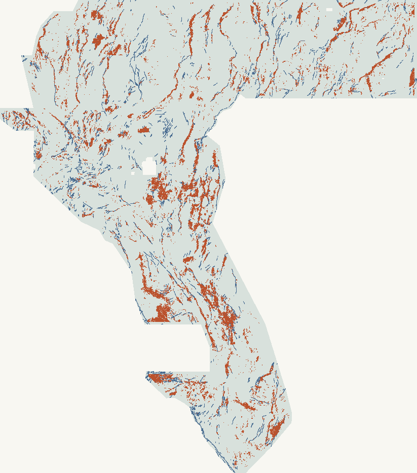

Geologic Enhanced Mapping System · competition 306
New predictions. Evidence before a slot.
A geological hypothesis becomes useful only when it survives the controls. The new odd-step versus channel detector is complete, independently packaged, and honestly not promoted.

Actual output preview · north up · EPSG:32611 public catalogue new research dots 4× downsampling; not confirmed new faults.
37,654new unit-dot predictions
0.177872local public-catalogue DTI
0.000090% marginal proxy floor
0competition slots spent
DO NOT UPLOAD · no slot
The locked holdout gate failed: pooled DTI 0.177872 is below the frozen baseline’s 0.180216; only 11/22 truth-bearing blocks improve (required 15). The lower floor is zero. Local format validity is not scientific promotion or organizer acceptance.
Selected spacing 2.8 px / 280 m · nominal 90% marginal block band · lower floor 0.0000
Selection/calibration: 21/21 disjoint-role blocks, not adaptive leaderboard scores. Simultaneous over five spacings; rank 20/21. Exchangeability is assumed and unverified. No private-score, pooled-map, geographic-conditional or global-artifact guarantee.
The actual result
Better than random. Not better than the control.
Locked test comparison
Pooled DTI
Mean block DTI
Spacing
H47-C1 profile detector
0.177872
0.177038
2.8 px
Ordinary-terrain + raw-band baseline
0.180216
0.176051
3.6 px
Fixed-seed spaced random
0.070924
0.060701
2.8 px
The slight mean-block gain does not rescue the pooled loss. Selection and promotion rules were fixed before test interpretation. No leaderboard score is claimed for this TIFF.
Remove affine terrain slope from cross-profiles; compare an odd step template with an even channel/ridge template. Add along-strike consistency and gravity-normal agreement to raw features. No prior submission field or catalogue-distance feature constructs the candidate.
One float32 data band. Raw samples are finite in [0,1]; an internal TIFF validity mask marks exactly the template’s outside-footprint pixels as null. CRS, 100 m resolution, dimensions, bounds and affine transform match. No .msk sidecar.
A genuinely different prediction, with a bounded audit.
Bounded uniqueness: 561 prior-raster comparisons across 54 public repository inventories, plus local history; zero exact positive-mask or in-footprint value matches. Maximum mask Jaccard 0.0406. Excluded inventory objects are listed with their actual reasons in the audit (including wrong-grid/multiband or non-single-TIFF archives). Standalone H33 TIFFs were compared. Unpublished/inaccessible outputs are not covered; this is not global uniqueness or proof of geological discovery.